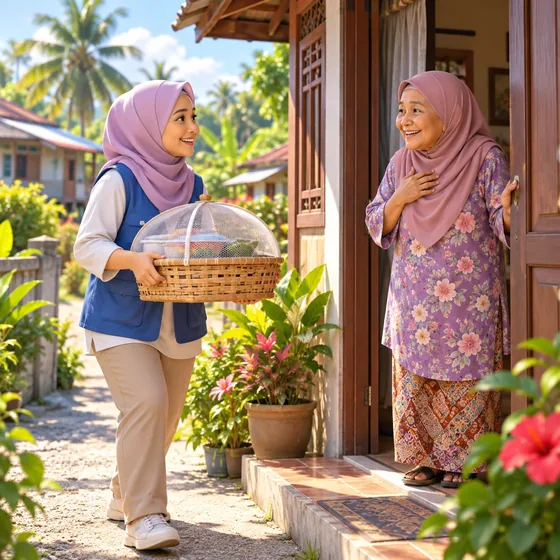
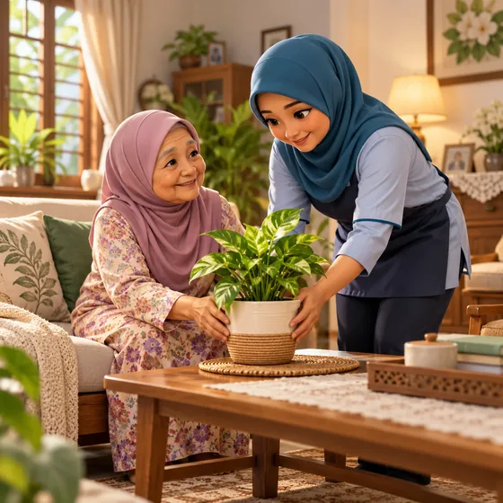

Our Silver App
Tap through a mock app built for an older person looking for help.
Future app idea
One tap closer to real help.
Tap through the phone below. It shows the app this dashboard is building towards.
Made for older people.
The same flow as Try a case: big buttons, one question at a time, one plan for every need, and places that open straight in Google Maps.
- Malay and English
- Large touch targets
- Minimal typing
- Clear status updates
Who is using the app?
A few simple questions, one at a time.
2 / 10 · About
How old are they?
3 / 10 · Daily life
What is hard now?
Choose all that apply.
4 / 10 · Help needed
Which ones are needed?
Suggested from the answers. Pick any.
5 / 10 · How
How should each one come?
6 / 10 · Your plan
One plan for all of it
3 places could cover all 4 needs.
One coordinator holds this case.
7 / 10 · Contact
Hospital bedWheelchairAdult diapers
Phone number added after the Phase 1 check
8 / 10 · One trip
One trip to every place
One car ride can cover all the visits.
- Masjid Al-Bukhary KedahBed, wheelchair, diapers
- Kedah Home Nursing 01Home nursing
- JKM KedahMonthly living help
9 / 10 · Family
Share with family
Everyone helping sees the same plan.
10 / 10 · Follow-up
Help on the way
- Hospital bed borrowedToday
- Nurse visit bookedThursday
- Follow-up callIn 3 days
Storyboard
The help one tap could bring
- Transport to appointments

Meals brought to the door
Help at home- Health visits
- Masjid and community
- Company and a chat